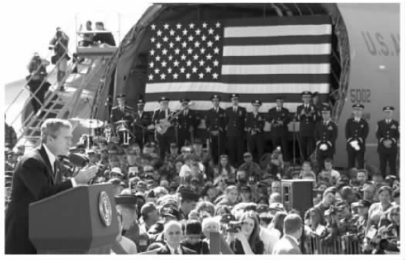
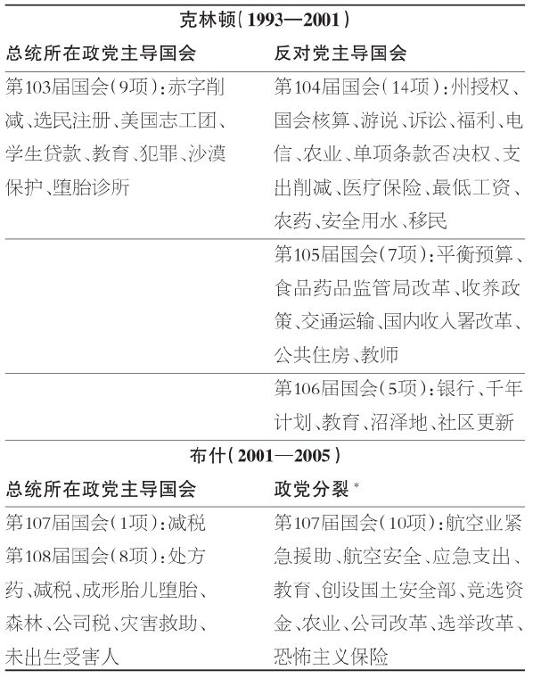
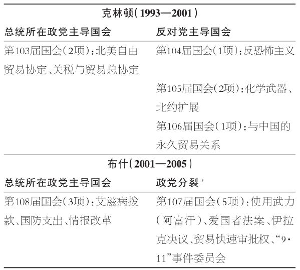
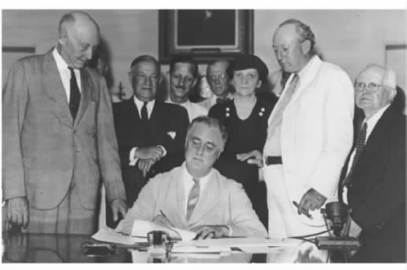
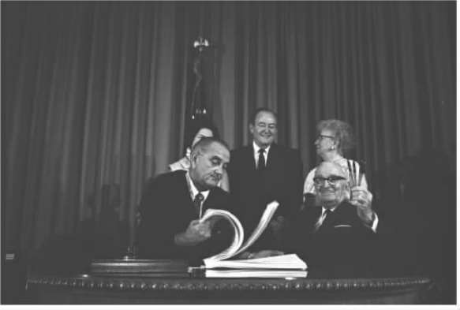

总统是决策者，他们从事的工作由民众期望和目标实现之间的紧张关系所塑造。这种张力大多源自开国元勋们试图创立一个运转良好的政府的手段——但是并不是太有效。开国元勋们将权威分开并限制权力。因此，作出决策一般是共同完成的。国会能够通过法案，但是要由总统签署从而成为法律。总统可以商谈条约，但是必须得到参议院三分之二的多数批准。最高法院可以否决一项法律，但是国会与总统可以通过制定一项避开最高法院议题的法律来达到目的。我情不自禁地想到，开国元勋们将会满意于分权体系的当前发展，最重要的是因为当年在费城辩论的许多制度问题依然是今天的核心问题，尤其是在下面这个背景下：总统权力应该大到何种地步？
无论共同完成与否，总统都要为华盛顿发生的事负责。经常受到检视的正是总统的工作满意度，现在一年甚至受到检视数百次。为什么呢？一段时间内只有一位总统。总统实际上是唯一经全国民选产生的官员。他们担任最高领导人，这当然是展现着权威的一个头衔，因此人们期待他们领导众人并且达成目标。没有任何借口，更没有人会说：“但是你不理解，那是个共同事业。”
碰巧的是，人们也期望总统能够恪守其权威和地位的边界——从而避免滥用权威，承认其他分支的合法性，并且尊重人民了解决策的内容及程序的权利。让总统为整个分权政府中发生的一切负责，这公平吗？我将这个问题留给你回答。但是，历史清晰表明，总统们将出于上面陈述过的理由负责，这种责任因此是随职务而来的。那些试图角逐总统大位者必定事先便明白这一点。那些入主白宫者首先体验到的与众不同之处就在于责任方面。杜鲁门总统曾经直率且简洁地说：“责任止于此处。”
本章将走进总统工作的内部世界，揭示在全国性政府中作出决策的本质以及总统在决策过程中的角色与功能。相互依赖是互相嵌入的分权体系的主要特征，每个分支都施展权力促成其他分支的工作。
法律制定及其执行为相互依赖提供了例证。总统指定议事日程并提议应该完成的事项，国会在根据设定的议程进行的立法活动中代表着选区的利益，官僚机构执行由国会通过并经总统签署的法律，法院则裁定对法律的挑战和法律的执行。各个机构的确分享权力并竞逐权力，但是，一个机构的工作很少会被误认做其他机构的。如果发生职能侵犯，那种干扰将可能受到批评，甚至会对簿公堂。
鉴于总统会在国内与国际上公开露面，他们一般需要富有前瞻性地思考，衡量各项提案与决定的效果对其未来治理能力的影响。用小布什的话来说：“我认为我的工作就是要立于时代之先。总统……可能会陷入泥沼，如果你不能成为应该成为的战略思考者的话。” [50] 理查德·诺伊施塔特提供了更为细致入微的分析：
对诺伊施塔特而言，“从政治角度进行思考的本质”会引导总统保护自己在未来决策过程中的影响力。例如，1994年，当克林顿威胁要否决一项自己不喜欢的全民医疗保险提案时，他实际上限制了自己在这方面的选择范围。在国会发表国情咨文演说时，总统为一项医疗保险计划进行了辩护。随后，他在半空中挥舞着钢笔并威胁动用否决权。这位前总统在回忆录中承认了这个失误：
最终，这项计划在民主党把持的国会参众两院都惨遭失败。
总统必须以多种多样的正式或非正式身份与无数官员和团体发生互动，例如作为外交官与他国互动、作为政党领袖与政治人物互动、作为管理者与机构人员互动、作为教育者与公众互动，以及作为三军统帅与武装部队互动。然而，其中最重要也最永久的关系是总统与国会议员之间的关系。单是预算过程就会确保总统将密切关注国会山动向。“除了依照法律的规定拨款之外，不得自国库中提出任何款项。”（宪法第一条第九款）简言之：缺乏国会的拨款，政府便会处于困境，根据宪法，它不能从财政部得到拨款，正如1995年克林顿与共和党人主导的国会在预算问题上的剑拔弩张。
在与国会的工作关系方面，总统们各不相同。总统们的政治背景和政府背景解释了这种不同的大部分原因。几个事例解释了最近几位总统的不同。
林登·约翰逊曾经担任过众议员（12年）和参议员（12年，其中10年作为领袖）。他是身为总统的多数党领袖 。“他很早便学会且永远不会忘记政客的基本技能，这是一项将任何数字都除以二再加上一的能力。” [53] 正如约翰逊在国会中的表现，他是一个促成国会山多数以支持“伟大社会”计划的高手。
理查德·尼克松也曾在国会中任职，但是并不是国会领袖，并且任职时间为6年而不是24年。他的兴趣和专长在外交政策方面。他是身为总统的外交部长 ，更喜欢致力于国家安全和国际关系议题。因此，他并不想与国会议员保持热络联系，这些国会议员的主要兴趣在于国内议题。引述一位共和党众议员的说法：“我可以确定地断言：没有私人关系，你几乎没有方法可以联系到他。” [54]
吉米·卡特也不欢迎与国会的真正联系。然而，原因并不相同，再一次与背景联系在一起。作为“后水门事件”的民选总统，卡特对主导着国会的妥协政治充满狐疑。他是身为总统的政治 门外汉 。忘了自己在1976年获胜时的微弱优势，他的观点是总统代表着全体人民，并且拥有资源来提出全面的施政方案。与政治性的讨价还价相比，他更强调做正确之事的重要性。
与卡特一样，里根、克林顿和小布什在担任总统之前都曾经担任州长职务。相应地，他们在与国会的工作关系方面呈现了行政倾向上的不同。与私生活中的职业一致，里根是一名身为总统的演员 。他对自己的身份的看法，最好地概括于卢·坎农的一本书，即《里根总统：一生的角色》的副标题。与卡特不同，里根一点也不反对妥协，这契合了他对总统角色的理解。他将自己的职责视为类似于指派并界定有限的议程、委派幕僚承担职责并研议细节、同意合理的妥协、宣布胜利。在他的政治舞台上，他同意克林顿的观点：“民众期待总统获胜。”
克林顿则是一位身为总统的竞选者 。历史上，极少有总统具有如此之多的竞选公职的经验——竞选众议员、竞选总检察长及6次竞选阿肯色州的州长和2次竞选总统。即使在赢得总统大位之后，他依旧继续贩售其施政方案。每次发表国情咨文之后，他都会四处奔走来加固公众对其提案的支持。在提出法律议案方面，他比里根具有更为广泛的抱负——里根只是聚焦于一些大型项目。

图6.1 现任总统在征程中。小布什为寻求支持而宣传造势。（美国空军照片，由吉姆·韦基奥上士提供）的权力作宽泛解释。
小布什沿袭了克林顿既为选举也为政策宣传造势的做法。实际上，小布什超过了克林顿创纪录的巡回演说次数，以至于一位学者将小布什称为竞选式总统。 [55] 当然，克林顿和小布什的风格与目的并不相同。小布什的工作方式是身为总统的纯粹的行 政长官 。他是最为奉行权力分立主义的总统之一，坚信总统与国会拥有不同的功能。他将自己的工作视为指定议题并向国会提交议案，而不是像约翰逊那样在国会山寻求多数支持。他的宣传造势首先是为了使公众确信，他拥有正确的政策重点以及最有效的方案。与尼克松一样，在国家安全问题上，他会对自己第二次世界大战之后的其他总统，在对待国会的方式上同样各不相同：艾森豪威尔——军事指挥官 ；肯尼迪——资历尚浅 的参议员 ；福特——少数党派领袖 ；老布什——职业外交官 。总统们是带着个人观点来推进工作的，这种个人观点有助于塑造总统对所遇到的各种议题以及衍生这些议题的事件的反应。
总统们在不同类型的环境之下作出不同类型的决定。他们的政策世界步履匆匆并且情况复杂。他们需要应对政策内容及其阶段、过程和互动效果。许多事是常规性的，实质上是由文官官僚、获任命的政治官员及其幕僚、政策专家处理的，这些人很可能都关注总统的政策重点。不过，总统必须负总责，因为他们有权说是或否，或者再试一次。
政策内容
内容是指政策是“什么”，即考虑中的要旨。其范围非常广泛，但是大多数议题都属于两个大类：国内议题和对外议题。这两类之间存在互动效应。能源供给和需求是一个很好的国内议题的例子，它对外交政策会产生巨大影响，反过来也受外交政策影响。然而，每一类都保持着足够的显著特征，证明着分类的合理性。其中，国会在国内事务中比在外交和国家安全议题方面扮演着更重要的角色。在两个类别之中，总统扮演的角色显著不同，他在外交事务方面具有大得多的自由裁量权。
表6.1显示了重要的国内事务的范围。表中给出了克林顿两个任期（1993——2001）和小布什的第一任期（2001——2005）期间制定通过的主要国内立法。这些法律以总统所在政党是否在国会中占多数席位（本党主导或者政党分裂主导）来分组。首先，请注意表6.1中所列主要法律的精简标题反映出的广泛的主题范围：财政、社会、福利、环境、犯罪、医疗保险、选举、游说、机构、重组、国内安全、商业、农业、灾害等。这些事务中的每一项都在官僚机构和国会委员会中拥有一个组织机构。这些机构关照着受立法影响的委托人，那些委托人将会游说总统与国会，让两者认可并支持自己的观点。在代议制民主下，人们难以期待其他的东西，但是这的确使提出和实施变革变得复杂了，因为那些从政府项目中获益的人想要守住已经到手的东西。
第二，请观察主要法律获得通过时，总统所在的政党是否在国会山占据多数。实际上，不论主导国会的是总统所在政党还 是反对党，通过的主要法律的平均数目并无显著的不同 。第103届国会和第108届国会都是总统所在政党占据多数，平均有8.5部法律通过，非常接近于4届政党分裂的国会平均通过的9部法律。在第107届国会的几个月开会期中，共和党在参议院中占微弱多数，一项附加的主要法律在此期间得到通过。显而易见，当不同政党分别控制不同政府分支时，政府瘫痪（gridlock）并非不可避免。
第三，表6.1显示总统在面临不断变化的政党运势时需要如何敏捷应对。在克林顿的两个任期与小布什的第一任期的12年中，把持国会的政党经过4次变换：从第103届国会中的总统所在政党主导，到第104届、第105届和第106届国会中的反对党主导，再回到第107届国会短暂地由总统所在政党主导，然后到第107届国会剩余会期中的政党分裂主导（只在参议院中），最终回到第108届国会的由总统所在政党主导。对于这些不同的政党格局，需要采取不同的策略。如果另一党派占据国会山多数，总统便丧失在指定议程方面的主导性。当总统所在政党占据多数时，本党团结将带来胜利，但是如果反对党处于主导地位，他们便需要反对党的投票支持。
表6.1 主要的国内立法，1993——2005

* 指民主党在参议院占据多数，共和党在众议院占据多数。在前五个月中，共和党人占据参议院多数。
来源：作者汇编自David R.Mayhew，Divided We Govern：Party Control，Lawmaking，and Investigations，1946-2002（New Haven，CT：Yale University Press，2005），208-13，与http://pantheon.yale.edu/~dmayhew.
在制定和执行外交政策与国家安全政策时，总统们具有更大的独立性。身为三军统帅的宪法地位，再加上条约缔结权与大使任命权，为强化总统作为国家领导人的角色提供了特别权力。表6.2显示，纯粹属于外交政策或国家安全政策的主要法律或决议要少得多。在所列的克林顿和小布什任期内的14项法案中，4项涉及贸易协定，另外7项涉及恐怖主义和伊拉克战争，除了一项外，其他都发生在小布什任期内。这些法案中的多项对国内事务都有重要影响，尤其是贸易协定、情报搜集与《爱国者法》等，其中《爱国者法》赋予司法部更大的权力来打击恐怖主义。
总统在对外和国内安全政策方面有很大的自由裁量权，克林顿与小布什任期很好地说明了这一点。这些权力可能成为争议的主题，经常引致国会的调查和监督，原因多数是因为国会在总统采取的动议方面作用很小或根本不起作用。
在克林顿任期内，自由裁量行动的显著例证包括军事行动与和平倡议。这些行动都未要求国会授权。1995年8月下旬，北约发动了对波斯尼亚塞族的空袭行动，克林顿授权批准美国参与。在库尔德人控制的一座城市遭到袭击之后，克林顿于1996年9月上旬命令轰炸巴格达；鉴于伊拉克拒不与联合国调查人员合作，克林顿于1998年12月命令再次轰炸巴格达。1999年3月，他又发动针对塞尔维亚的空袭战争，迫使南斯拉夫总统从科索沃撤军。
表6.2 主要的对外立法与国家安全立法，1993——2005

* 同表6.1
来源：同表6.1
克林顿还将和平倡议基本上作为行政行为来发起。1995年11月，“代顿和平协议”结束了波斯尼亚冲突，美国派遣军队以维护和平。2000年7月，克林顿在戴维营主持了高层会晤，来解决以色列与巴勒斯坦之间的问题。他本人还积极地致力于解决北爱尔兰地区的争端。
同样，小布什也提供了数不清的案例来说明，总统会在国会很少或完全没有直接参与的情况下作出军事和外交决定。即使是国会2001年使用武力决议（阿富汗）和2002年伊拉克决议，基本上也未限定军事行动的时间、理由说明和形式。在对待囚犯问题上产生的大多数争议，都来自关于恐怖分子监禁问题的行政和军事决定，这些决定在最早期并不受制于由公开的国会听证会而来的严密审查。相似地，2006年出现了国家安全局对美国境内被怀疑与恐怖分子有通讯往来的人进行无证监控的问题；这是由总统下令实施的一项做法，后来成为法庭审查的对象。
小布什总统最初并不愿意涉及以色列——巴勒斯坦问题的解决。然而后来，2003年5月，他的政府开始积极致力于“和平路线图”倡议，并在2006年夏天以色列和基于黎巴嫩的真主党之间爆发战争以后，通过联合国来推动达成停火协议。朝鲜的行动所引起的核威胁，由美国通过与该地区内各国（特别是中国、日本、俄罗斯和韩国）共同合作的外交努力而得以缓解。在努力抑制伊朗发展核武器的野心的早期，外交手段也是依赖的对象，只是这一次是由欧洲国家带头。这些仅仅是众多例子中的一部分，显示了外交首先是并且必须是行政机构的权限范围，总统在其中指引方向。
当纯粹的行政行动产生肯定的结果时，随后会获得国会的支持。当发生严重的问题或者问题的解决时间比预期的更长（如越南战争和伊拉克叛乱）时，国会的批评会逐步增加，调查会启动，甚至会威胁或强制实施对总统裁量权的限制。
但是，如果军事行动正在进行之中，国会则会保持克制。国会掌握着钱袋子，但是国会议员们并不愿意拒绝向部队拨款。在现代战争中，同样可能出现的情形是军事行动在国会采取行动之前已经结束。这里的问题与外交有若干不同。条约需要参议院批准（出席者的三分之二多数），财政支持则需要国会授权与拨款。然而，行政机构决定着磋商的地点、时间与内容。国会并没有另行设置外交小组。在对外政策方面，不管国会批准与否，总统都会施展其最大的影响力。
政策类型
总统的角色也会依纳入考虑的政策的类型而有所不同。大多数决策都可以归为四大类：新倡议、现有项目的渐进式调整、对已入册项目的重要改革、危机反应。不同类型的政策都会或多或少地促进对总统的授权。
新倡议 最可能来自于行政机构，并且经常在新总统就任时提出。例如，克林顿在上任第一年成功地提出美国志工团倡议，鼓励年轻人在社区中从事志愿工作以换取教育支持。小布什则支持一项基于信仰的倡议，来刺激社区层面上对弱势群体的帮助。国会并没有通过所提议的立法，小布什于是签署一项行政命令来启动这项提案的某些方面。
与过去相比，新施政方案的通过变得更为困难，很大程度上是因为从罗斯福到约翰逊时期入册项目的成本问题。除国防外，权利保障计划，例如社会保障、老年保健医疗制度与医疗补助制度、联邦教育补助、住房贷款担保、食品券以及其他福利补助，再加上国防，在预算中为新倡议留下的空间很小。因此，新项目一般必须包括新型的资金筹措方式，有时还包括削减其他开支的提议。
出于多种原因，渐进主义 成为大多数现存政府项目的特征：伴随人口的增长和老龄化、生活成本的上升以及有组织的团体的权利主张，更多的人被纳入补助范围。例如，伴随民众寿命延长、健康问题增多，以及被活跃的政治团体，特别是美国退休人士协会所代表，为年迈公民提供补助的许多项目在规模方面日益增长。
渐进主义政治是可以预测的。一旦就位，权利项目便会自动增长。遏制支出的唯一途径便是改变受惠资格，这是大多数总统和国会议员在提出时会很谨慎的一个动议。作为议程设定者，总统知道，任何这种提议，即使是为了亟需的改革，也可能在国会山和受益者当中引发政治风暴。因此，总统必须认真估算提出重大变革所牵涉的政治风险。
尽管存在政治成本问题，总统偶尔也会冒险提出针对现有项目的重要改革 。当大多数政府项目面临严重的审查与变化时，变革的时机便到来了。这个时机一般发生在大型项目（如罗斯福“新政”和约翰逊的“伟大社会”）制定实施的数十年后。因此毫不奇怪的是，近年来行政分支向国会提交的计划已经在题目中包含了“改革”：例如社会保障与福利改革、老年保健医疗制度改革、农业补贴改革、公共住房改革。最常见的情况是，提议中的改革以改良的方式实施，但是偶尔也会是彻底的重构——如1996年的福利改革，并且引发剧烈的争议。
在社会保障方面提议的改革具有很高的风险，这在2005年小布什任期内得到证实，当时他支持将私人账户作为已经支付的部分工资税的一种选择。无论是在参议院还是众议院，他的计划连在专门委员会都没有得到通过。1981年，里根总统也认识到了这种政治代价，当时他建议进行一些重要改革，随后在1982年，共和党人丢失了25个众议院席位。移民改革也是一个政治雷区，小布什在2006年就领教过。恰是这个如何对待数百万非法外来移民的问题，也充斥着政治风险。
一个长期存在的看法是，福利改革同样携带着许多相同的风险。克林顿总统将其作为第一任期的政策重点，这对一个民主党人而言是不寻常的举动。然而，他将福利改革排在医疗保险改革之后，而后者遭到了挫败。与此同时，国会中的共和党人同意将福利改革作为优先的政策。获得1994年的众议院与参议院多数席位后，他们主动制定了一项计划。克林顿总统两次否决该法案，但是当共和党人主导的国会第三次通过时，他签署了。许多民主党人批评克林顿的行为，他自己的政府中有些人则辞职离去。

图6.2 罗斯福总统签署1935年《社会保障法案》，“新政”项目之一。（社会保障局历史档案）

图6.3 约翰逊总统签署1965年《老年保健医疗法案》，“伟大社会”项目之一，前总统杜鲁门出席。（林登·约翰逊图书馆收藏照片，由冈本洋一拍摄）
克林顿在这两种情形——全民医疗保险与福利改革——中遇到的风险是多重的并且连续的。他提议采取两项主要改革，前者彻底失败，后者则将福利改革的提议权丢给了共和党人。最终签署共和党人第三次通过的法案，引发了自己党内的批评。这些情形极好地说明了提出彻底改革所带来的种种危害。
危机反应 具有与前述政策类型截然不同的性质。根据定义，它是一种特别的类型，是对常规秩序的一种干扰。人们的期望是行政机构会立即作出回应，由总统领导和指导。国会也会参与其中，但通常是在总指挥的领导之下。然后，人们会评价总统的回应是否有效。
危机反应的最新事例也是历史上最为突然的事例之一：2001年9月11日恐怖分子袭击纽约世贸大厦与华盛顿五角大楼之后小布什作出的决定。常规性国内改革的现有议程，被一系列国土安全与国防议题所替代。政党分裂的国会以及选民中存在的党派之争，很快转向了对小布什总统领导力的不分党派的支持。其施政满意度猛增至空前的高点，并且自这些测量手段被采用之后，这一高水平满意度此次维持的时间在所有总统中最长。
形成鲜明对比的是，在伊拉克战争问题上，对总统的支持更为冷淡，无论是在开始阶段，还是在全面军事行动结束之后发生持续不断的暴动袭击时。区别在哪里呢？总统很难说服其批评者，并进而说服许多民众：萨达姆·侯赛因在伊拉克的统治代表一种危机，或者这种统治直接与反恐战争相关联。这些质疑又被无法找出大规模杀伤性武器所强化。换句话说，无论对公众还是对许多国会议员而言，伊拉克战争并不被视为危机反应。
卡特里娜飓风是危机反应的另一个例证，与“9·11”事件相比，它对小布什的领导力远为不利。没有人怀疑这场飓风是一种危机或者应该由联邦政府作出反应。但是，反应的效果是地区性的，而不是全国性的，罪魁祸首是大自然而不是恐怖分子。的确，“9·11”事件也被地方化了，但是其威胁却四处扩散。
就卡特里娜飓风而言，联邦、州以及地方政府之间的协调并不适于处理一项异常的自然灾害。作为人们期待中应该作出有效应对的机构的首长，总统必然要承担起责任。不管公众对总统或政府应对能力的期待是否现实，卡特里娜飓风灾害都是总统责任的一次主要体现。它就是与身在高层的职位如影随形。没有任何借口可言。
政策过程
政策的设置与执行的过程可被划分为如下几个阶段或功能：问题界定、议程设定、备选方案形成，以及项目的合法化、执行和评估。总统及其助手在每个阶段扮演着不同的角色，其他分支官僚机构、立法机构与司法机构也是如此。政治主要决定着总统的参与以及这种参与的理由说明与形式。但是，将能明显看出的是，鉴于总统与行政分支采取一种组织化的等级结构来提出政策重点与提案，它在早期阶段扮演着特别关键的功能。
问题界定 是第一步。什么议题会要求获得联邦政府的关注，为什么？至少要思考两个维度：宽泛的议题（例如恐怖主义）与具体的问题（例如国土安全、辨别并俘获或者铲除恐怖分子、处理社会与经济效应）。在辨识与阐述议题并对需要应对的问题进行界定方面，总统经常扮演关键角色。他们处于引导公众对某个议题进行关注的有利位置上。
但是，总统们并不拥有最后决定权。什么议题要求关注，为什么？这经常是国会与媒体辩论的主题，甚至就该议题的重要性存在着广泛共识。例如，在后“9·11”时代的美国，移民问题被广泛视为一种关键议题。但是，一些决策者将这一问题界定为未能控制好边界、执行好现存法律；其他决策者则强调解决数百万非法移民问题的必要性，因为他们作为劳动力资源已经成为美国经济中的重要力量。
即使总统的偏好已经被法律制定过程带来的变化所修改，总统也必须承担责任吗？这是必然的。就算是总统本来反对的计划，总统也需要担负起责任（例如，里根必须为任何他反对的任何数量的政府方案负责）。
议程设定 实际上是设定政策重点的一项活动。它是一项极具政治色彩的行为，总统具有显著的宪法、机制与选举方面的优势来详细说明政策重点。他们发表国情咨文，他们由一个能够为政策重点提供详细解释的复杂官僚体系服务，他们与预算编制者紧密共事，而这些预算编制者知晓正被设定的政策重点的财务记录和效果。
总统们在利用这些优势的程度方面各不相同。决定因素包括总统的治理哲学（更为主动还是更为被动）、主要议题的性质与数量以及反对党的力量。例如，艾森豪威尔并不是强势的政策活动者；他在相对平和的时期内担任总统，面对极少的重大议题；并且，在其8年总统任期中，民主党在国会两院中占据多数席位时间长达6年。与其相反，约翰逊则在总统任期中展现出一副扩张的面貌，他必须处理日益不受欢迎的越南战争，并且其所属党派占据着国会绝对多数。
恰如预期，在给定的三个决定因素（哲学理念、议题与反对党力量）上，二战之后的各位总统展现出多种不同的组合。里根推崇有限政府理念，试图削减税负与官僚机构的规模，并任职于相对平稳的时期，拥有8年任期中有6年由共和党人主导参议院的意想不到的优势。在任职的最初几年中，里根的议程主导了与政策相关的政治活动，其削减税负的立法成就影响着此后总统的议程。
克林顿与小布什的情形很有趣。前者开始时奉行雄心勃勃的政府角色观，后来则作出调整；面对很少的国内或者对外危机；并且不久便在国会中失去民主党人的多数地位。国会中的共和党人，主要是众议院议长纽特·金里奇，在1995年得到议程设定权力，但是后来眼睁睁地看着克林顿在1996年连任后重获这项权力。2000年，小布什倡导“富有同情心的保守主义”议程，作为保守主义政策重点的中间道路。这些政策重点几乎尚未落实，小布什便察觉到美国正在从相对平和时期向“9·11”后日益剧烈的危机时期转型。他持续不懈地与在国会中占微弱优势的共和党（在2001年共和党甚至失去参议院多数达到18个月之久）合作共事，这种状况在他推进政策重点时会促进激烈的党派斗争。
如果总统只有有限的政治资本，他会期待其他人来扮演议程设定者的角色。1989年，当老布什在国会山上处于弱势政治地位时，众议院议长詹姆斯·赖特（来自得克萨斯州的民主党人）便是活跃的议程设定者；1995年，当克林顿也面临这种地位时，纽特·金里奇（来自佐治亚州的共和党人）便成为活跃的议程设定者。2001年，当民主党成为参议院多数时，他们处于为参议院设定议程的位置上，这与小布什所偏好的位置很不相同。对小布什而言，更引人注目的是民主党人在2006年中期选举中接过国会两院的主导权。议程设定要求总统与反对党领袖进行磋商。
备选方案形成 也是行政机构本来就有的功能，主要原因在于官僚机构及其等级结构所代表的专业知识。总统及其幕僚在竞选中作出承诺，并在主政白宫期间回应各种议题。通常情况下，这些承诺缺乏详细的规划。它们有待相应的内阁部门或机构内的专家来加以拓展。与之相似，国会委员会的工作人员也经常与国会议员的私人工作人员一道，准备对规划进行修改或者提供替代方案。
总统们很少寄望于国会能够全部批准他们的备选方案，即使在总统所在政党占据国会中的明显多数时。1965年约翰逊的老年保健医疗制度提案，就由众议院筹款委员会民主党主席威尔伯·米尔斯（来自阿肯色州的民主党人）进行了大幅修改。另一个医疗改革的例子：尽管民主党占据多数席位，克林顿的全国改革方案还是在国会两院都遭到否决。众议院与参议院民主党人设计替代方案的努力也徘徊不前。
针对重要议题，一般还是由总统来说：“让我们从这里开始着手。”每一位高层官僚和国会议员都有一个装满备选方案的抽屉（在今天，更可能是一个硬盘）。然而，这些人都没有总统那样的威望，也没有宣传其备选方案的受众。
合法化 是一项备选方案（经常是一种妥协）得到批准的过程。这基本上是一项立法功能，尽管当法案向前推进时，总统及其幕僚也会积极地参与其中。多数支持的获得，要经过各委员会和参众两院内部的一系列阶段，以及两院之间的会谈。这个过程可能会持续数月，甚至会延续数年。对某些争议性提案来说，并不罕见的是，在达成最终通过法案所要求的所有立场的协调一致之前，国会需要多次重复这些阶段。因为参议院中有阻挠议事程序，在法院通过法案可能需要绝大多数的支持（60%）。并且，根据宪法条款，缔结条约需要参议院三分之二多数的赞同，宪法修正案或者推翻总统的否决则需要国会两院三分之二多数的通过。
总统、总统助手以及各部和机构的工作人员一般都会活跃地寻求多数——有时是处于支持的立场上，其他时间则是处于反对一方。总统的变更——通常意味着政党轮换，可能意味着白宫支持或者反对立场的颠倒。最终，总统拥有签署或者否决法案的宪法权力，或者不签署，任由其在不含星期日的十天之内自动成为法律（如果国会已经休会，法案不会成为法律）（第一条第七款）。在寻求多数过程中的多个阶段，总统经常利用这种宣布“是”或“否”的核心权力来影响立法，例如他会威胁否决法案，除非法案作出修改；或者撤销对法案的支持，这样便有可能改变投票结果。
在立法方面，存在着一种通过计算一个国会会期中通过并被签署为法律的法案数量来记分的趋势。但是，因为难对付的议题必须得到解决，在重要的全国性议题上，记分的进展可能会很缓慢。将法案未能通过记为一种损失，往往会掩盖在这些议题上取得的进步。举例而言，联邦政府为了制定一项对教育项目的援助政策用了将近三十年，教育项目很久以来都是州和地方政府专门负责的领域。种族、宗教与联邦主义等议题，必须在法案最终获得国会两院大多数支持之前解决。法案在众议院中会得到通过，结果只是随后在参议院遭遇南部民主党人的阻挠议事。作为约翰逊“伟大社会”计划的一部分，《中小学教育法》最终在1965年得到通过。
危机经常能够加速这种合法化的进程。“9·11”事件之后，国会通过了《爱国者法》，这是一项全面的措施，它为总检察长提供了搜集恐怖分子情报的权力（窃听、搜查、拘禁以及其他监控措施）。参议院中的委员会听证和投票程序被绕开了；众议院议长介入众议院议事程序，将行政分支支持的法案直接提交给全体议员。最终的法案在国会两院中得到压倒性多数的支持而通过。四年之后，国会又经过数月通过了对《爱国者法》的重新授权。
政策执行 基本上是一项官僚性质的功能，作为行政首长的总统将会对其负责。立法者通常会对项目如何执行以及在哪里执行提供指令。但是负责适用这些指令的官僚们，依国会指令的明晰程度不同，往往具有很大的自由裁量权。州和地方政府经常在执行国内项目时扮演主要角色，这是在责任分配方面的又一重复杂性。
代表着新的冒险行动、重新组织或政策重大转向的大规模项目，可能需要数年时间才能得到有效地执行。老年保健医疗制度和医疗补助制度方案于1965年制定，它们是联邦政府进行实质性干预的主要例子，干预对象是一个多维度、半公共又缺乏同时性的医疗保障体系。1960年代开始时规模适中的项目，现在耗资则动辄以千亿美元计。2004年，处方药津贴计划被追加通过，但是在最初几个月中同样面临着严重的执行困难。
另一种类型的政策执行，标志着联邦政府应对大型灾难的特征。灾难救援项目在近几十年中一直在扩展。然而，几乎从定义就能看出，应对不可预料之事很困难。2005年，墨西哥湾海岸沿岸的卡特里娜飓风便是这种情形，这次飓风或许是美国曾经遭遇过的最大的自然灾害。出于若干原因，政府被视为应对不力，这些原因包括：灾难的严重程度、三级政府中正在进行的对灾难应对机构的重要整顿、通讯和执法的中断、州和地方机构之间协调机制的缺乏以及何人主管什么问题的不确定性等。然而，这些以及其他失败之处的责任被归于小布什总统，大多数官员、大众，到最后连总统本人都持有这种观点。卡特里娜飓风的经历是不分情形的总统问责制的经典案例。这样做的一个目的是，将责任归给最适于作出变革的官员。
评估 是政策活动中最为多样化的一种。每个分支都会与私人利益和私人组织一起，涉身其中。负责项目执行的行政机构通常必须向国会汇报其在达成目标方面的进展。这些机构中的监察长有调查欺诈行为和渎职行为的职责。在准备预算时，管理与预算办公室会持续地评估项目。白宫幕僚会不断地关注项目，特别是那些与总统政策偏好相关的项目的有效性。并且，总统会经常委派专门委员会来评估项目并提出变革建议。
国会委员会也有监管项目执行情况的责任。这种监管可以采取多种形式：作为重新授权与拨款的常规举措；通过授权委员会或通过两个监管委员会（众议院监管和政府改革委员会、参议院国土安全与政府事务委员会）来展开调查；或者通过政府责任署的工作。后者是专门负责向国会提供政府项目有效性信息的立法分支的机构。
司法分支也可能被要求对项目进行评估，检验项目是否违反宪法规定。宪法第三条并没有将司法审查权专门赋予法院，但是大法官约翰·马歇尔成功地声称，这项权力显著地暗含在宪法之中，甚至暗含在法官作出的宣誓之中（1803年“马伯里诉麦迪逊案”）。然而，必须有个案例让法院来行使这种权威。他们不能像国会通过法律、总统签署法律那样，常规性地将宪法标准适用于法律。
最后，委托人团体、传媒、智库、公共兴趣或监督团体、特别工作组以及候选人组织会持续地评估在册的项目。媒体扮演着特别重要的角色，原因主要有二：媒体相对于政治与政府的反对派角色；以及近几十年来媒体机构总量的增长。第一个原因可以由通常被视为新闻的东西予以解释——负面多于正面。第二个原因代表着传播手段的阶段性变化。不仅由于电子技术的发展，出现了新的形式，而且覆盖时间也持续不断，如24/7所显示的全天候，即一天24小时/一周7天。一个结果是，白宫通过大规模地拓展其传播活动来适应这种形势。以前只有一个新闻秘书外加一个很小的工作团队，现在则有多位助理为总统提供传播方面的协助，包括演讲稿撰写、社区拓展、总统巡回的前期工作、政策和规划方面的传播活动、公共联络以及政府间事务等。
政策协调：预算过程
几十年来，总统一直主导着预算过程。1921年的《预算与会计法》赋予总统在预算局（原属财政部，后属总统行政办公室，再后来更名为管理与预算办公室）协助之下准备年度预算的权力。“在美国国家历史上，1921年法案……是对政府各分支之间的权力平衡所作出的最为重要的变动之一。” [56] 一项预算案在行政机构中的形成是一个多阶段的、历时近年的过程，总统与各部及机构之间不断地磋商与改进，管理与预算办公室作为中间人游走其中。如表6.4所示，最终结果随后以预算咨文形式被提交给国会。在过去，国会中的税收、拨款和授权诸委员会几乎完全依赖于总统预算来展开工作，从未将预算规划作为一个整体通盘考虑。
1974年，一切都发生了变化。随着《国会预算和截留控制法》的通过，国会确立了自身的预算流程。这项法案创立了众议院和参议院预算委员会——由国会预算办公室协助，并且正式确立了一项程序来调节和监督其他委员会的工作。为按时推进程序，还设置了截止日期。但是，那些截止日期很少得到遵守。
表6.4高度简化地显示了预算程序理应如何运行 。如表所示，每个分支都会准备一个预算案，尽管国会中的预算案会以行政分支准备的内容为方向。国会程序以以下机构之间的磋商为特征，包括国会两院中的预算委员会，税收、拨款与审查委员会，其中国会预算办公室自始至终提供专业知识。意料之中的是，该程序紧张且充满争论，既代表着各委员会对自身权限的保护，也代表着它们所服务的利益。然而，它也通过多种方式反映出行政分支中各个机构与总统以及管理与预算办公室之间所发生的一切。
筹备 （3月→2月）：历时近年的总统、管理与预算办公室及各机构之间的改进与磋商过程。管理与预算办公室传达总统的偏好，并负责具体调整各机构的要求以符合总统的偏好。
提交 （1月→2月）：备妥总统预算咨文并将预算提交到国会。
更新 （7月）：总统提供中期审查意见。
筹备 （1月→4月）：为期三个月的对当前预算和总统预算的审议和分类过程，涉及到国会预算办公室，各预算委员会，税收、拨款与授权诸委员会。
决议 （4月）：国会通过一项同时生效的预算决议，其中包含给各委员会的指导原则。
协调 （6月→9月）：作出调整以满足预算目标的程序，再一次涉及国会预算办公室，各预算委员会，税收、拨款与授权诸委员会。
执行 （10月1日→9月30日）：各机构执行由国会授权与拨款的项目。
表6.4 预算程序（作者根据多种来源汇编）
人们或许也会想到，白宫与国会之间会有摩擦冲突；在近些年当中，1995年克林顿总统与共和党主导的国会之间的冲突最为激烈。当时，共和党人40年来首次赢得全面的国会控制权，他们下定决心要赢得预算战争。1995年秋季，他们连续两次通过削减联邦项目的决议。克林顿总统否决了每次的决议，两次导致联邦政府的部分关闭。1996年1月，共识最终达成，此时已经超过财政年度开始时间（1995年10月1日）三个月了。人们普遍承认，总统已经赢得这次政治抗争。他成功地消解了国会山上的共和党多数的气势。“这个充满党派偏见、对抗斗争与政治诡计的过程走向了僵局，共和党人最终让步。” [57] 结果是，克林顿总统迈出了重要的一步去恢复他在1994年所失去的东西，即在设置议程方面的主导权。
1974年之后的时期以政党分裂的政府与微弱优势为特征，这是制定预算的政治背景。只有卡特（4年，1977——1981）与克林顿（1993——1995）在国会中拥有相当大的政党优势。这一时期的其他总统（福特、里根、老布什、1994年后的克林顿 [58] 、小布什）或者面对反对党主导的国会（一院或者两院），或者在工作中只有非常微弱的政党优势。冲突虽然不可避免，总统却有自己的优势，即更为细致的筹备、威胁动用否决权以及对预算过程更为协调的态度。通常情况下，在预算抗争方面，他们胜多败少。 [59]
在早期，据说并非所有总统都生而平等。同样，并非所有总统都平等地作出贡献。各种重大事件似乎造成了这种差异。一些总统主政在历史的转折点，另一些总统则任职于相对平和的时期。差别并不一定在于时任总统的素质或能力。危机是不可选择的。相反，危机检验着那时碰巧入主白宫的任何总统。并且，历史表明在危机时期任职的总统会引人注目，历史学家和大众通常对他们评价较高。
第二次世界大战之后，处于转折点的总统包括杜鲁门、约翰逊、里根与小布什。杜鲁门必须面对二战结束的问题，应对其后果，处理朝鲜冲突。此外，他是富兰克林·罗斯福的继任者，而罗斯福是一位拥有伟大的国内成绩和国际成就的总统。约翰逊情形相同，任满了广受欢迎的肯尼迪总统的剩余任期，肯尼迪被暗杀保证了民众对他的遗产的支持。约翰逊接手负责前任的议程，并且制定了“伟大社会”计划，这项计划自那以后便一直主导着国内政策。约翰逊对越南日益升级的危机处理得远为糟糕，与在国内事务上的表现同样乏善可陈。
1980年的经济环境为里根削减税负并向国防转移资源提供了支持。减税的效果是，随着赤字攀升而改变了政策争论；向国防转移资源最终导致冷战结束以及随后的苏联解体。在本书写作之时，评价小布什为时尚早，但是很少人可以质疑“9·11”事件作为一项对政策与政治产生重大影响的历史事件的重要性。反恐战争——后被小布什扩展为伊拉克战争——对对外政治和国内政治产生了深远影响。
重大事件也对二战之后的其他总统（艾森豪威尔、尼克松、福特、卡特、老布什和克林顿）产生了影响。但是，这些事件都比不上杜鲁门面对的战后重建问题、约翰逊面对的延续被暗杀总统遗产的问题、里根所面临的经济和政府改革机遇的问题，以及2001年“9·11”事件及其后续发展所带来的国内与国际威胁等问题。因此，第二组中6位总统的在位任期更多地是以努力巩固、加强和改革已经运行的政策与项目为基本特征。他们的总统职位是备位人性质的，当然这并不意味着对他们在遇到大规模事件时的个人应对能力有丝毫贬低。
战后总统中余下的一位——肯尼迪避免了一次潜在的严重危机，即苏联在古巴布置导弹所带来的威胁。毫无疑问的是，他在这次事件中表现出的决心引人注目，深得历史学家的认可。对肯尼迪进行归类的难处在于其任职时间的短暂。
政府自身具有一种动力，它并不依赖于白宫中谁主沉浮。在职的总统们协助维持着这种动力、加速一般变化，并回应意外事件。他们是立法、政策制定和决策的促成者。行政分支的组建，是为了以国会对总统保持依赖的方式来推动这些目的。
也许，总统工作最为显著的需求是灵敏性与适应性。人们期望总统能够推出全面的协调的项目，但是依据其本质，分权政府在多种场合下都允许其他机构的参与。如本章所论，总统对政策内容（更加偏向于外交与国防事务而不是国内事务）、政策类型（多数属于危机应对）、政策过程（多数侧重于问题界定、议程设定和备选方案形成的早期阶段）和政策协调（相当程度上关注预算编制，尽管与过去相比程度降低）拥有不同的影响力。最后，由于意外事件能够使分权体系的正常运行搁浅，总统的工作便具有最大的历史影响。通常以危机形式出现的这些事件，最终会成为领导权的试金石。